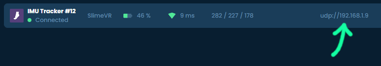

Building and Uploading the Firmware
Uploading your firmware must initially be done over cable. Once you have the tracker connected to your WiFi after your first firmware update, you can opt to use OTA in the future.
1. Connect Your Tracker to Your PC
If your microcontroller board has a button labeled FLASH, BOOT or RESET, press and hold the button and plug in the micro-USB cable. If you have different labels and/or buttons, please check your microcontroller's manual for more information.
Note that holding the button is not required for Wemos D1 Mini.
2. Build Your Firmware
-
Follow the configuring the firmware project page to prepare your project for building and uploading the firmware.
-
Press the build button at the bottom of Visual Studio Code.

3. Upload Your Firmware
-
If you are using the OTA method, first make sure the tracker you wish to flash is turned on.
-
Once the firmware has been built, press the upload button to upload the firmware.

-
If the upload is successful, you should get an output that looks like this:

Congratulations! You have now successfully uploaded the firmware to your SlimeVR Tracker!
If you have trouble with uploading your firmware over cable check the following:
- Make sure your USB cable from the tracker is plugged firmly into your PC.
- Make sure that your USB cable is a data and charging cable (it is suggested you try other cables or devices with the cable).
- Make sure that your drivers are up to date.
Additionally, this can be caused by software hogging COM ports (VSCode and Cura can be the cause of this).
Uploading via OTA
Once you have successfully connected your trackers to your WiFi, you can use OTA to handle all future firmware updates.
- Retrieve the IP of the tracker you wish to flash. The IP can be found through network monitoring applications, or by copying it from the SlimeVR Server as seen in the image below:
 - In
platformio.inifile uncomment the following lines in Visual Studio Code by removing the;:
;upload_protocol = espota
;upload_port = 192.168.1.49
;upload_flags =
; --auth=SlimeVR-OTA
- Change the value of upload_port to the IP address retrieved during the first step (if retrieved for your SlimeVR server you should only copy the set of 4 numbers between the second and third
/, in the example image above this would be 192.168.1.109). - Turn the tracker you wish to flash off and then on again.
- Wait for the tracker to reconnect to the server.
- Press the upload button to upload the firmware.
- After the upload reaches 100%, wait for the tracker to reconnect to the server again. Turning the device off too soon can result in an incomplete update (bricked until you upload new firmware over USB).
- Repeat for as many trackers as you need.
Troubleshooting
If you encountered an issue while following these steps check the Common issues page.
If you don't find an answer to your question there ask in #diy channel in the discord, we will be happy to help.
Made with care by Prohurtz#0001, adigyran#1121, Eiren#0666 and CalliePepper#0666. Edited by CalliePepper#0666, Emojikage#3095, NWB#5135, and Tony#9719.